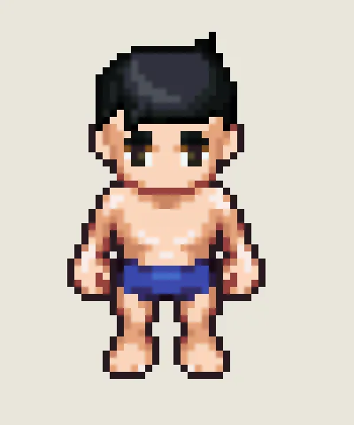

Гром: день по твоим часам и герой с твоей внешностью
Вывод: день теперь считается по твоим понятиям и подводится только вечером. Гром засчитывает день после 22:00, если в Тренере 3 приёма пищи и у Евы нет просроченных задач. Сегодняшнее закрытие в 14:44 я отменил. Герой перерисован по твоему фото.
1. Понятия – для всех
| Понятие | Время (НСК) | Что это значит для ботов |
|---|---|---|
| День | 07:00–01:00 | итог дня до 01:00; с 01:00 до 07:00 ничего не считаем, боты молчат |
| Рабочий день (мой день) | 10:00–22:00 | утреннее сообщение с 10:00, итог – в 22:00 |
Записал правилом для всех чатов в общие инструкции и в память. Ева уже перешла: планёрка 10:00–22:00, утренняя рассылка в 10:00 (выложено и перезапущено, её 125 тестов проходят).
2. Как Гром теперь подводит день
- 10:00 – «рабочий день пошёл, ключевая задача первой».
- Днём день не закрывается, сколько бы ты ни поел.
- 22:00 – проверка: 1. в Тренере 3 приёма пищи и больше; 2. у Евы нет твоих открытых задач со сроком по сегодня. «На завтра» у Евы снимает просрочку, «снята» тоже.
- Всё есть – день засчитан, +1 к серии, сообщение.
- Чего-то нет – голосовое Винсента и список, чего не хватает. До 01:00 можно добить: скинуть еду Тренеру, закрыть или перенести задачу у Евы. Гром проверяет раз в 5 минут и засчитает сам.
- 01:00 – не засчитан: −10 здоровья, серия с нуля. Суббота – выходной, как было.
3. Что проверено вживую
- Сегодняшнее раннее закрытие отменено в боевой базе: серия 0, закрытых дней нет.
- «Сегодня» на живых данных показывает: еда 2 приёма из 3; задачи у Евы со сроком сегодня или раньше – 11 штук, самая старая «GRAFIT – доработать структуру страниц» со сроком 12.11. В сообщении – первые 6 и «ещё N».
- Тесты бота: 47 из 47. Бот перезапущен на сервере, ошибок в журнале нет.
4. Герой теперь похож на тебя
По твоему фото: чёрные волосы, коротко по бокам и с объёмом сверху (из 13 причёсок LPC ближе всего «cowlick»), густые тёмные брови, карие глаза, светлая кожа, без бороды. Пока дрыщ – тело растёт от тренировок. Родинку не ставил: лицо в спрайте около 10 точек, одна тёмная точка выглядит как грязь. Само фото в открытый репозиторий не попало, там только эти параметры. Новый герой уже ходит у тебя по рабочему столу, на странице и в окне «Гром».

5. Нужно от тебя
- До 22:00 скинь Тренеру ещё один приём пищи.
- 11 задач у Евы: на разборе в 18:00 закрой сделанные, остальные перенеси. Сегодня урона не будет – он включается с понедельника 16.11, но день без этого не засчитается.
Что раскрыть
1 – список всех 11 задач с просрочкой, 2 – почему 3 приёма пищи, 3 – как Ева переносит задачи.